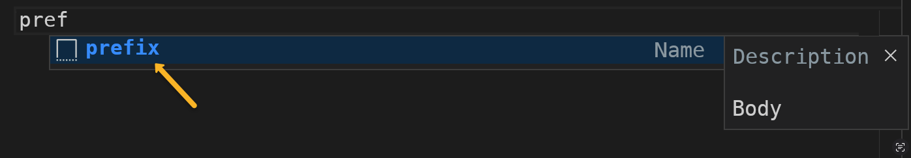
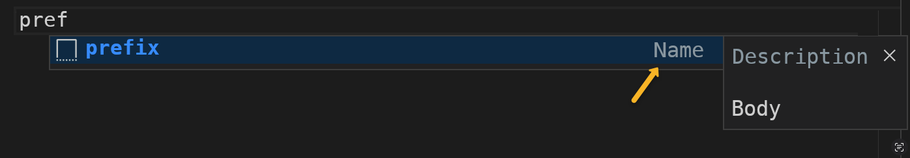
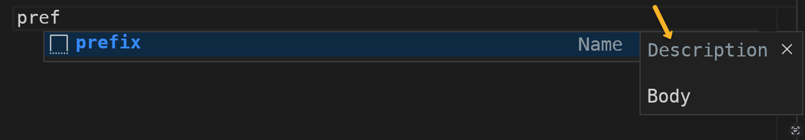
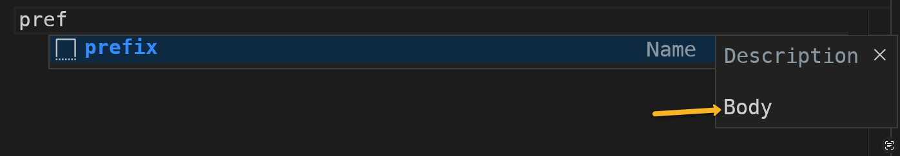

Visual Studio Code Snippets Builder
Enhance arcgis-js-vscode-snippets extension
Custom Snippet
> Official Visual Studio Code documentation:
Prefix

Defines one or more trigger words that display the
snippet in IntelliSense. Approximate string matching (fuzzy search) is performed on
prefixes, so in this case, "fl" could match "FeatureLayer".
Recommendations
Good prefixes are short and easy to remember, so you can
include the name of the method, class or property. Avoid
using just acronyms. E.g. MapView, basemapsWithAPIKeys, findLayerByTitle, popupTemplateProps.
Name

Short description that follows the prefix.
Recommendations
Use plain English, using spaces as needed (length <35 characters). E.g. "Find layer in a MapView by title"
Description

It is an optional description of the snippet displayed by
IntelliSense.
Recommendations
Explain of what the snippet does. Reuse text from the API reference whenever possible. Add AMD and ESM paths if it is a class initialization (new ...)
Description

Code snippet that will be place in the file. Newlines and
embedded tabs will be formatted according to the context in
which the snippet is inserted.
Recommendations
Use "Placeholders" (${1:foo}) and "Choices" (${1|value1,value2}) when possible.
Custom snippet code:
Do you think more users would benefit from this snippet?
If so, please consider
contributing to the official extension: